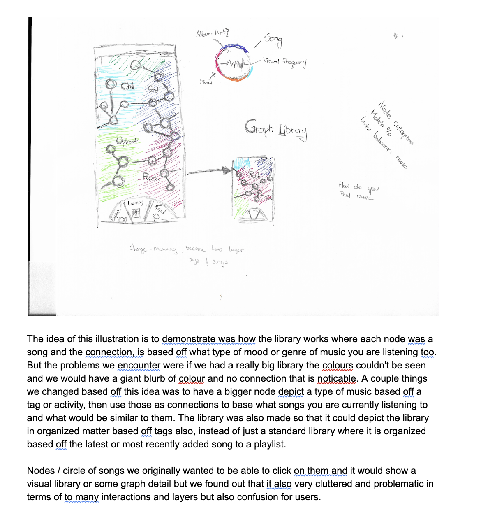
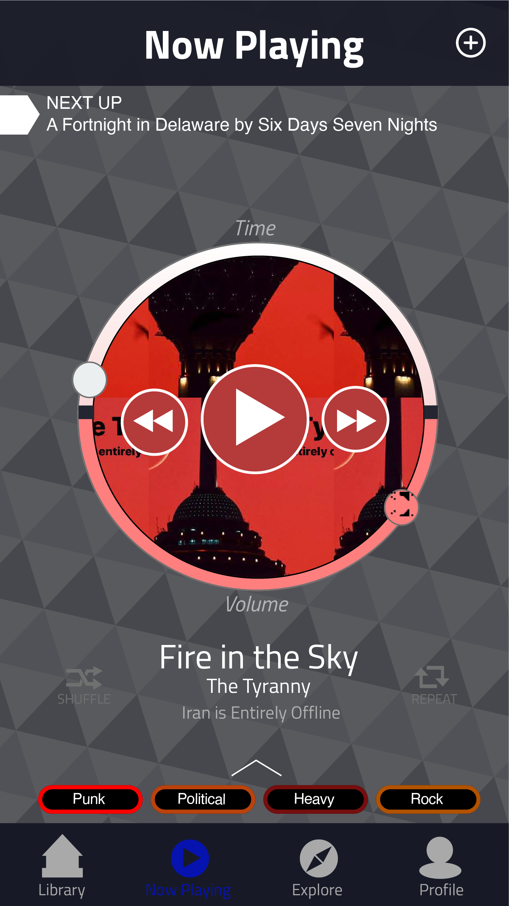
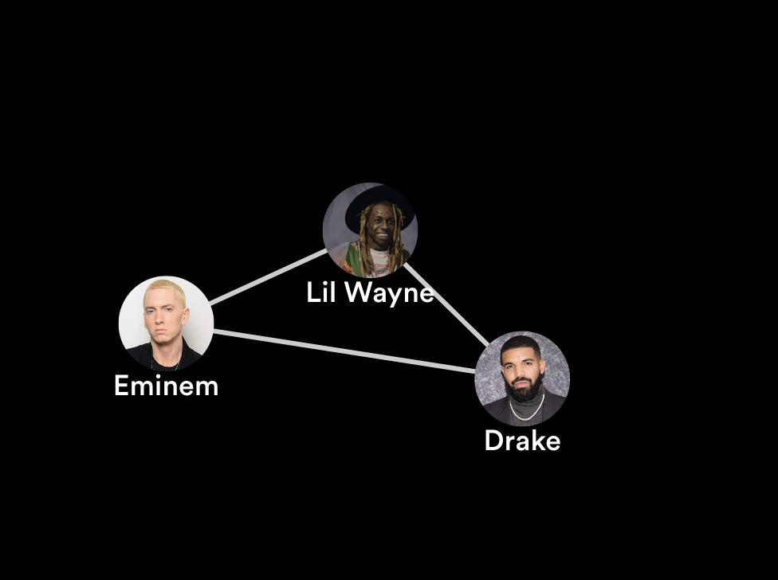
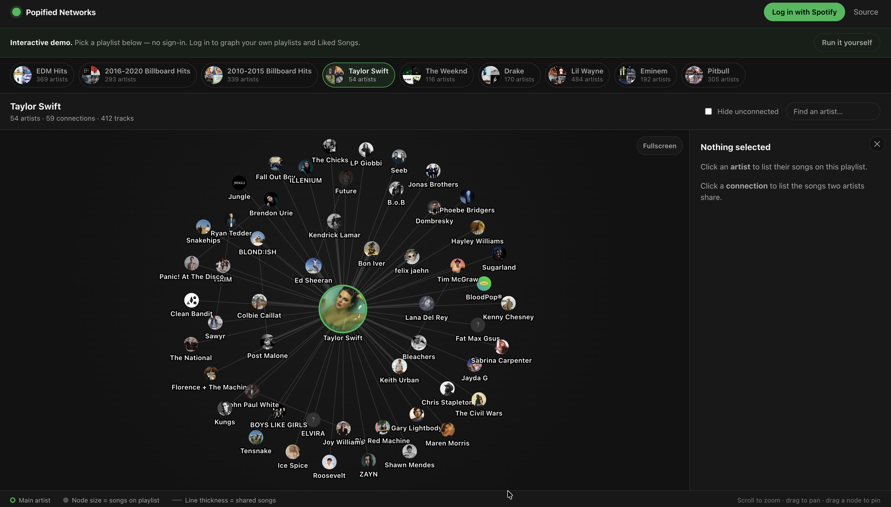
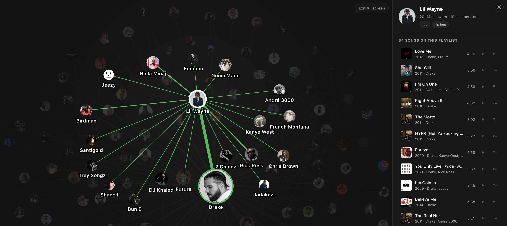
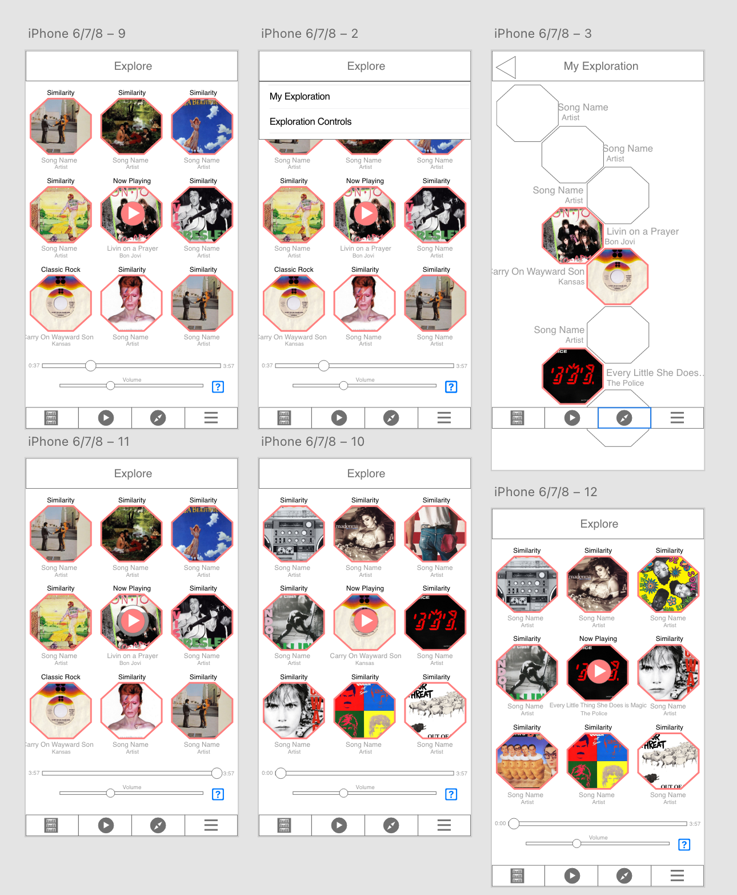
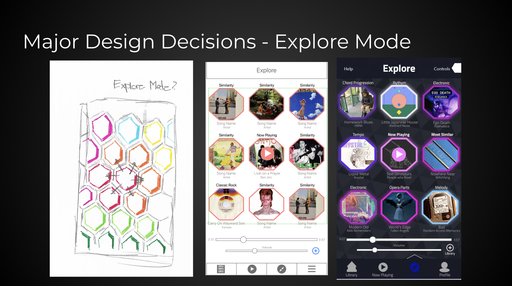
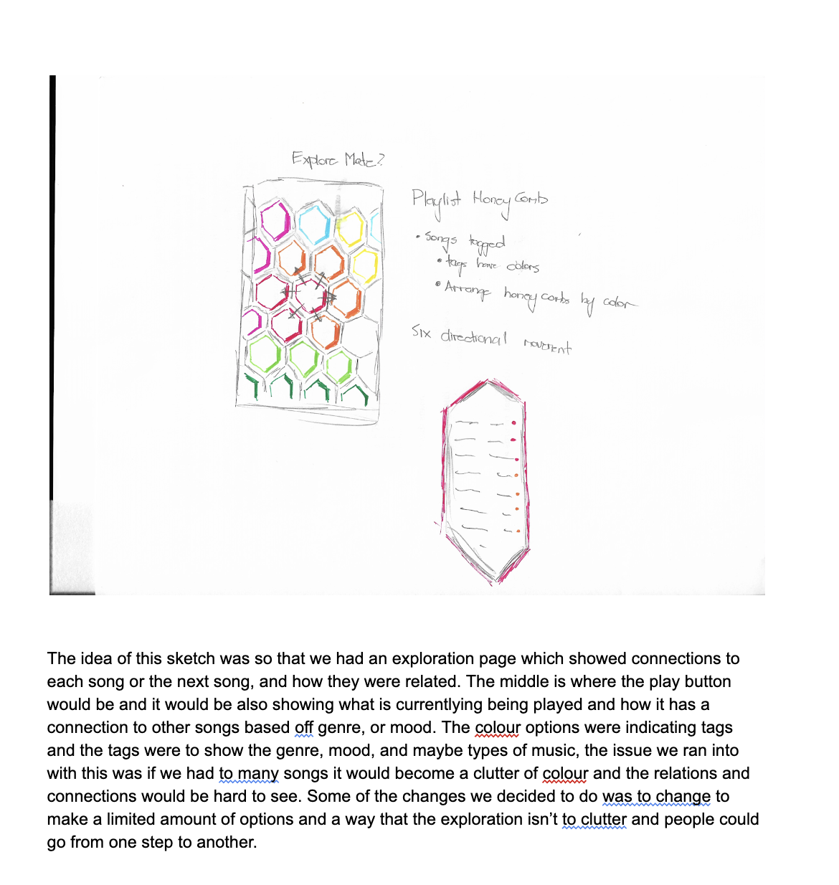

Where It Started
The idea behind this goes back to 2018, but the actual product was built in 2026, and I want to be upfront about that because the gap is pretty significant. It wasn't slow progress. It was a side project I picked up when I felt like it, and the 2026 rebuild happened once I had the engineering skills to do the original concept justice against a live API.
2018: MusicSurf. At the University of Calgary, I ran a full UX process for a concept called MusicSurf, which included user interviews, paper prototypes, and a high-fidelity Adobe XD prototype. It organized songs by mood, genre and emotion into a network structure instead of playlists, and that was really where the nodes-and-links model came from. MusicSurf was about mapping music by how it felt.


2018 to 2019: Exploring the Spotify API. This wasn't a proper project at all, more like casual tinkering on evenings and weekends. I wanted to know whether collaboration credits could actually be pulled from the API, and it turned out they could. The earliest sketches already had shared song counts on the edges and the actual track list behind each connection, and those two ideas are still what the product is built around today.


2023: First working web build. I assembled the pieces into a Flask app running locally. Artist photographs replaced the plain circles as nodes, and it was around that point that the product started to feel like something real. Then I set it aside again.

2026: The current product. This was a focused rebuild where I put together a structured Flask app, a D3.js front end, nine pre-built playlist graphs served as static JSON, and an analytics pipeline built with privacy in mind. It's the 2018 concept, executed properly against a live API.
The Problem
A playlist is just a vertical list, and a list can only ever communicate order. It can't show relationship. Two artists can sit forty rows apart, have made six songs together, and nothing in the interface will ever surface that.
Collaboration builds careers, crosses audiences and defines scenes, but the record of who worked with whom only exists as credits on individual tracks. That data is accurate and complete, but it's structurally invisible. A label, a manager or a journalist asking who an artist's real collaborative circle is, including the tracks they appear on rather than headline, has no tool to answer that. Today those questions get answered by memory or a manual discography trawl.
The Constraints I Had to Work Around
Getting from "the collaboration data technically exists" to "someone can open a link and explore it" meant working around some pretty hard platform limits, and each one ended up shaping a design decision.
- Spotify apps are capped at 5 users in Development Mode. Extended Quota requires a registered business entity and roughly 250k MAU, and since May 2025 individual developers haven't been accepted. A product that required login to start would have been usable by five people on earth. My response was to build all nine playlist graphs offline in advance so the product delivers real value without an account.
- Spotify has no "who has this artist worked with" endpoint. The core question the product answers can't be asked directly. My response was to derive it instead: walk every track in a playlist, extract all the credited artists, and build edges from co-occurrence.
- Genre data was coarsened until a diverse playlist collapsed into around three buckets, which made a shipped feature completely useless from an information standpoint. I removed it, and I'll explain that more below.
- Rate limits and batch size caps on metadata lookups caused naive fetching to fail on larger catalogues. My response was to batch requests, add retry logic with backoff, and cache the results.
The reframe that made everything possible was treating any playlist as the unit of analysis, instead of asking Spotify for a collaboration graph it can't produce. A full discography, a label roster, a whole scene, any of those can be expressed as a playlist and therefore graphed. The limitation became the interface.
How It Compares to What Else Exists
The music discovery landscape pretty much splits into two fundamentally different things. Credit data is a fact: these two names appear on this recording. Similarity data is an inference: these two names sound or feel adjacent. The first can't be derived from the second, and that distinction determines whether a product could ever have answered the question this one is asking.
MusicBrainz and Discogs do hold collaboration data, and MusicBrainz even models it as a first-class relationship type. But both present it as hyperlinked text that has to be navigated one hop at a time, opening pages and following links. The data exists. What nobody has done is join that credit data to a visual structure where the shape itself is the information.
Spotify was the right choice for three practical reasons. First, it returns artist photographs in the same API response as the credit data, which is the only reason using artist photos as nodes works at all. Second, it offers playback, so discovery can end in listening rather than a dead end. Third, batch endpoints can resolve hundreds of artists in just a handful of requests. One of those reasons has since expired. Until February 2026, the Spotify API would read any public playlist by ID, which is what made the "any playlist becomes the dataset" design possible. A platform change turned that into a 403 error, and the workaround is now to copy someone else's playlist into your own account first. The original decision was correct when I made it. The platform changed underneath it.
Why There's No Login Wall
Spotify caps apps in Development Mode at five manually approved users. Lifting that cap requires Extended Quota, which needs a registered business entity and roughly 250k monthly active users, and individual developers haven't been accepted since May 2025. A product that required login to start would have been usable by five people on earth. So login couldn't be the front door.
Nine playlists are built offline in advance by a Python script and published as static JSON. A visitor reaches a real graph with 369 artists and 527 connections, no account required, no redirect, no quota. Login is available for the few who qualify, but it's a bonus rather than a requirement.

Designing the Graph
The central visual decision was to use the artist's photograph as the node. Faces are much faster to process than names, which is why the graph feels pretty intuitive almost immediately. Node size encodes song count on the playlist, so the more tracks an artist has on a given playlist, the bigger their node appears. Link thickness encodes shared song count, so a thicker line signals a denser collaboration. A green ring marks the main artist on discography playlists, which gives an anchor point before anything is clicked.
I chose a dark palette because the graph's content is artist photography, roughly 369 simultaneous images on the largest dataset, and a dark canvas lets the photos carry the color while the interface itself recedes. The design system lives as CSS custom properties, and a build script copies the app's real CSS into the published static demo so both front ends share one source and can't drift apart.




What the Data Showed
I want to be upfront about where this data came from. I sent the link to friends, not a marketing push. Over five days I got 59 page views, 96 artist clicks, 21 song clicks, and 6 Spotify opens. Engagement rates are probably a bit inflated by that kind of warm audience, since someone who wants a project to succeed will try harder than a stranger would. What I actually trust is the drop-off data, because if a friendly audience still abandoned at a step, that step has real friction regardless of who's watching.
The public demo averaged 1.6 artist clicks per visit, which I found pretty encouraging since clicking is entirely optional. The bigger issue was the conversion from seeing to hearing. Only 31% of artist clicks led to a song click, and only 26% of those led to actual playback. My best hypothesis is that on mobile the detail panel sits below the graph, so the result of a tap is probably off-screen and people don't realize it's there. The other issue is that playback requires an active Spotify device, so anyone without one running hits a dead end. Those are the two things I'd want to test first.
Killing a Feature That Worked
I shipped a genre mode, which was the same graph clustered by genre instead of by force-directed layout. It worked technically. I removed it. Spotify had coarsened its genre data to the point where an entire diverse playlist collapsed into around three buckets, which made the feature pretty much useless from an information standpoint. Removing something that runs but delivers nothing is harder than removing something that's broken, and it's probably the product decision in this project I'd most want to talk through.
Where This Goes
Stripping out the music domain, what I built is a relationship-mapping engine: take a set of entities, derive their connections from shared events, and make the resulting structure explorable and provable. Artists and tracks are one instance of that pattern, but the same model works for co-authors and papers, actors and films, companies and contracts, contributors and repositories, really any domain where relationships are implicit in the records but nobody has assembled them into something visual. Music was the right first domain to try this in because the data is public, the relationships are dense, and I could tell right away whether a result was correct. I'm planning to take this further, and the general relationship-mapping problem is the direction I'm most interested in.
Three things I'd change if I started over. I'd run five moderated usability sessions before touching any code. I'd wireframe the responsive layout even for five minutes, because the topbar breaking at 320px was a lesson I learned the hard way. And I'd make it clearer from the first interaction that the connections are clickable, because the most interesting content in the product lives there and nothing in the current UI makes that obvious.